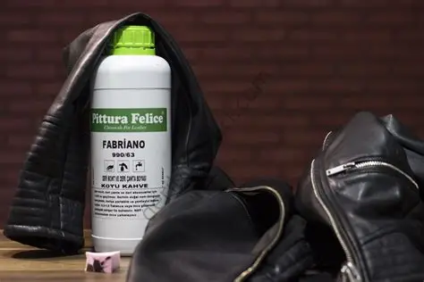
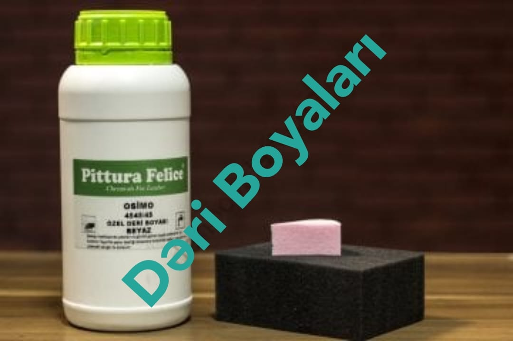
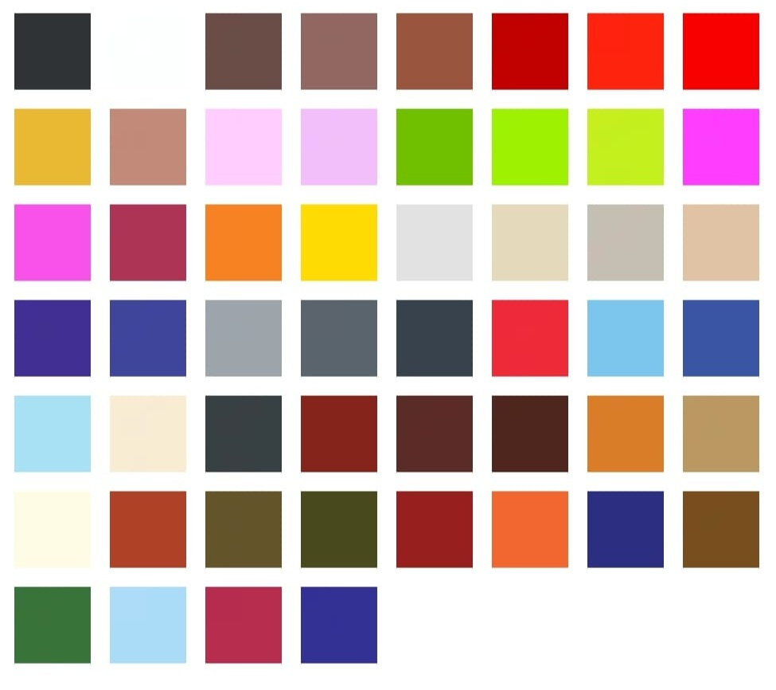

Dəri boyaları müxtəlif növ dəri məmulatlarının yenilənməsi, bərpası və rənginin dəyişdirilməsi üçün istifadə olunan xüsusi tərkibli məhsullardır.
Bu boyalar adi boyalardan fərqli olaraq dərinin elastikliyini qoruyur, çatlamır və səthin nəfəs almasına mane olmur.
Dəri gödəkçələr, ayaqqabılar, çanta və aksesuarlar, pul kisələri, kəmərlər, şalvarlar və əlcəklər də dəri boyaları ilə boyana bilər. Burada əsas şərt boyanın elastik olması və parçanın hərəkətinə uyğunlaşmasıdır.
Keyfiyyətli dəri boyası geyim üzərində çatlama və sərtləşmə yaratmır.

Boyamadan əvvəl səthi təmizləyin. Dəri boyaları həmçinin ayaqqabıların ilkin rəngini bərpa etmək və ya tamamilə fərqli rəngə boyamaq üçün istifadə olunur.
Xüsusilə klassik kişi və qadın ayaqqabıları, çəkmələr və dəri idman ayaqqabıları bu tətbiq üçün uyğundur. Quruma müddətinə riayət edin.
Nubuk boyaları nubuk dəridən hazırlanan ayaqqabı, çanta və digər aksesuarlarda istifadə olunur. Bu boyalar nubukun məxməri toxumasını qoruyur, səthi sərtləşdirmir və rəngi bərabər şəkildə yeniləyir.
Düzgün tətbiq edildikdə nubukun təbii görünüşü saxlanılır və məhsulun istismar müddəti uzadılır.

Əlimizdə olan məhsulun qablaşdırması 1 litr ölçüsündədir. Müştərilərimizin ehtiyacına uyğun olaraq bu məhsulu 100 ml-lik hissələrə bölərək göndəririk.
Bu üsul həm daha münasib qiymət, həm də sınaq məqsədli istifadə üçün əlverişlidir.